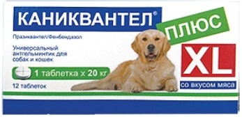
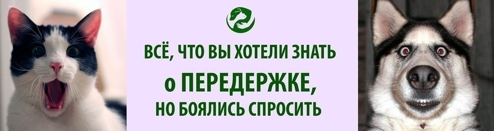

Подопечные собаки ГООЗЖ "Преданное сердце" нуждаются в препаратах от глистов - по плану надо всех в очередной раз обработать, а собак у нас на данный момент 44(учитывая передержки). Очень просим помочь следующими препаратыми🙏🏻🙏🏻🙏🏻:
⚡для взрослых собак: дронтал, цестал, милпразон , азинокс , каниквантел плюс, зоолекарь;
📲 волонтера +37529 8842276 Ирина
Пожалуйста, нажмите "поделиться", спасибо!

Это страшное слово "ПЕРЕДЕРЖКА"!
всё, что вы хотели знать о передержке, но боялись спросить!:)
"Преданное сердце" отвечает для вас на самые часто задаваемые вопросы по поводу передержек:
1) Что такое передержка?
2) Для чего нужна передержка?
Взяв животное у волонтера - Вы помогаете ему одному. Обеспечивая передержки Вы помогаете многим.